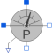
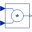
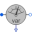

PowerSensorSensor to measure the power |

|
Diagram
{kind=link}
Information
This information is part of the Modelica Standard Library maintained by the Modelica Association.
This power sensor measures instantaneous electrical power of a singlephase system and has a separated voltage and current path. The pins of the voltage path are pv and nv, the pins of the current path are pc and nc. The internal resistance of the current path is zero, the internal resistance of the voltage path is infinite.
Connectors (5)
| pc |
Type: PositivePin Description: Positive pin, current path |
|
|---|---|---|
| nc |
Type: NegativePin Description: Negative pin, current path |
|
| pv |
Type: PositivePin Description: Positive pin, voltage path |
|
| nv |
Type: NegativePin Description: Negative pin, voltage path |
|
| power |
Type: RealOutput Description: Instantaneous power as output signal |
Components (3)
| voltageSensor |
Type: VoltageSensor |
|
|---|---|---|
| currentSensor |
Type: CurrentSensor |
|
|  | product |
Type: Product |
Used in Components (3)
|
Modelica.Electrical.Machines.Examples.ControlledDCDrives.Utilities
Ideal DC-DC inverter |
|
|
Modelica.Electrical.MultiPhase.Sensors
threephase Aron sensor for active power |
|
|  |
Modelica.Electrical.MultiPhase.Sensors
threephase sensor for reactive power |